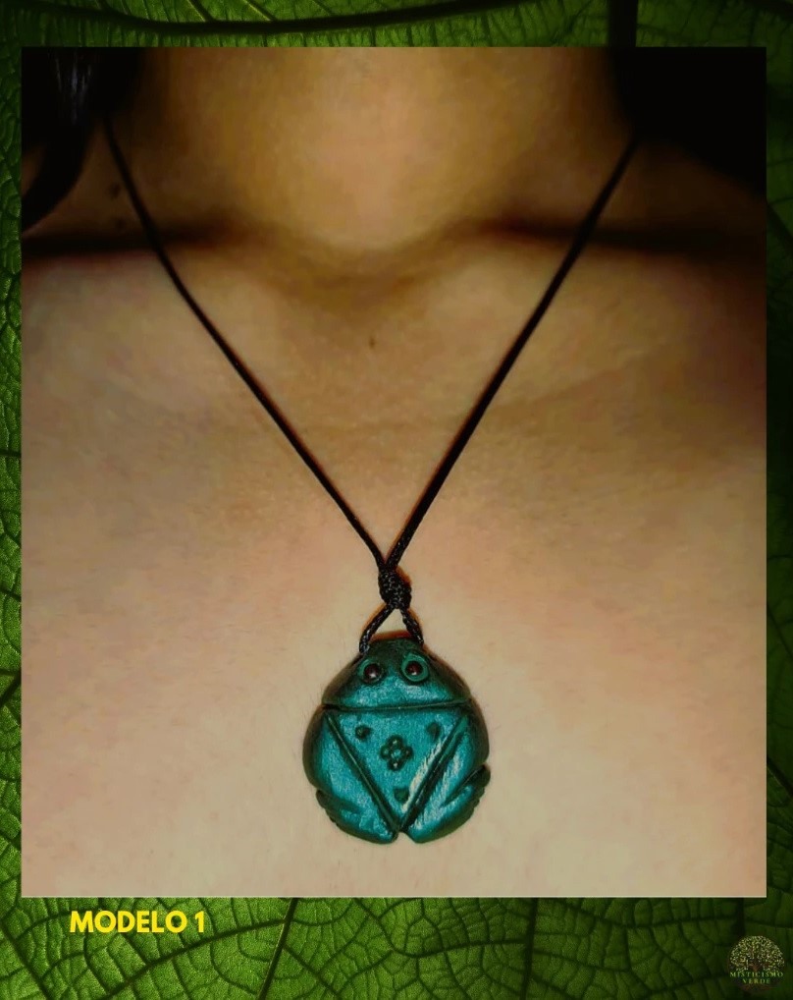
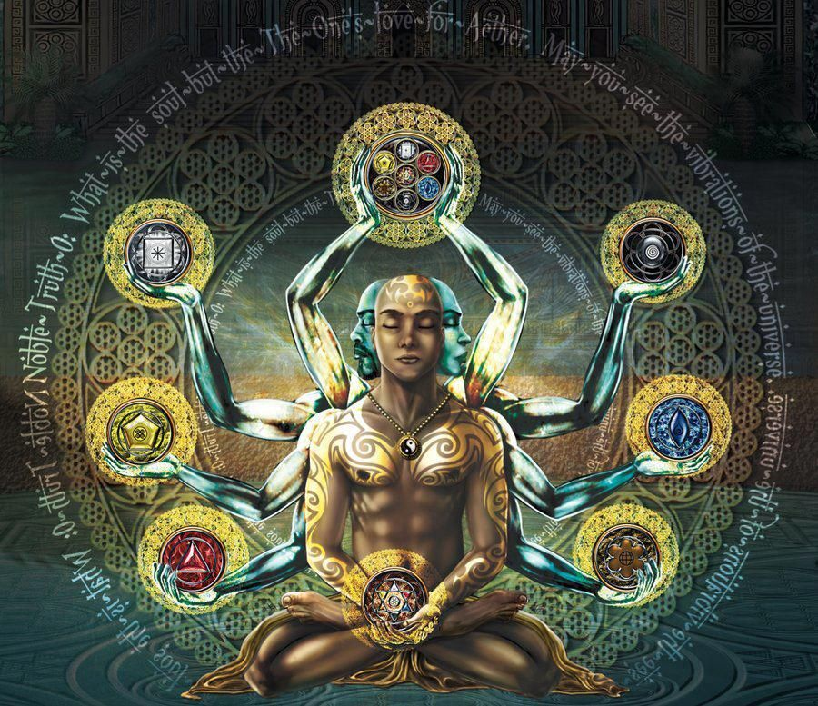

Um símbolo que vive entre a história e o encantamento
Falar do muiraquitã é falar de um símbolo que vive em duas dimensões ao mesmo tempo: a da história e a do encantamento. Do lado arqueológico, ele aparece como um artefato sofisticado, produzido em pedra verde e ligado a povos amazônicos de alta complexidade social. Do lado da tradição oral, ele surge envolto em narrativas de poder feminino, mistério e conexão com as águas sagradas da Amazônia.
É justamente nessa convivência entre matéria e mito que sua força permanece viva até hoje. O muiraquitã não se explica por inteiro apenas pela ciência, nem apenas pela lenda. Ele atravessa as duas. E talvez seja isso que o torne tão profundo: ele é, ao mesmo tempo, presença física e linguagem simbólica.
“Há símbolos que não pertencem apenas ao passado. Eles continuam respirando dentro da memória de um povo.”
As Icamiabas, as águas sagradas e o mistério da floresta
Uma das narrativas mais conhecidas liga o muiraquitã às Icamiabas, as lendárias mulheres guerreiras da Amazônia. Segundo a tradição, elas ofereciam o muiraquitã como presente sagrado em rituais ligados às águas, à fertilidade e à força vital. Em diferentes versões do mito, essas pedras verdes surgem do fundo de lagos encantados ou são associadas a poderes guardados nas profundezas da floresta e das águas.
Essa dimensão lendária fez do muiraquitã muito mais do que um ornamento: transformou-o em emblema de mistério, feminilidade, proteção e poder ancestral. Na Amazônia, onde a natureza nunca é apenas cenário, a água, os animais, as pedras e os ciclos carregam sentido. O muiraquitã nasce justamente nesse universo em que o visível e o invisível caminham juntos.

O que os vestígios antigos revelam
Para além da tradição oral, o muiraquitã também possui forte relevância histórica. Estudos arqueológicos associam esses artefatos às sociedades do Baixo Amazonas, especialmente aos universos Tapajó e Konduri, mostrando que eles circularam em redes amplas de troca, prestígio e relação entre povos antigos.
Isso é importante porque rompe uma visão rasa sobre a Amazônia pré-colonial. O muiraquitã nos lembra que havia tecnologia, estética, espiritualidade, circulação de matérias-primas e sistemas complexos de valor muito antes da colonização europeia. Não se trata de uma peça isolada: trata-se de um vestígio de civilizações sofisticadas, com profunda inteligência material e simbólica.
Importante
Quando o Misticismo Verde fala do muiraquitã, não está reduzindo esse símbolo a superstição. Está reconhecendo sua riqueza cultural, sua força ritual e o valor histórico de uma herança amazônica que sobreviveu ao tempo.
O que significa carregar um muiraquitã
Falar dos benefícios de usar o muiraquitã é falar, antes de tudo, de uma experiência simbólica e espiritual. Na tradição amazônica e no imaginário popular, ele é ligado à proteção, à sorte, à força interior, ao amor e à conexão com a ancestralidade. Seu uso atravessa o tempo porque ele é percebido como um objeto de presença: algo que lembra quem você é, de onde vem sua força e com quais energias deseja caminhar.
Para algumas pessoas, o muiraquitã atua como um lembrete de proteção. Para outras, é um vínculo com a floresta e com os saberes antigos. Há quem o use como símbolo de coragem, enraizamento, abertura de caminhos e fortalecimento da própria identidade. Seu valor está menos em promessas automáticas e mais na intenção que ele sustenta.
Um amuleto ancestral não substitui a caminhada interior — mas pode acompanhá-la. E quando essa companhia carrega memória, pertencimento e reverência, ela se torna mais do que um objeto: torna-se uma presença de caminho.

Por que esse resgate é tão rico hoje
Resgatar o muiraquitã hoje é muito mais do que repetir uma lenda bonita. É devolver profundidade a saberes amazônicos que durante séculos foram exotificados, empurrados para a margem ou lidos sem escuta verdadeira. É reconhecer que a floresta também produz pensamento, espiritualidade, arte, técnica e modos complexos de habitar o mundo.
Esse resgate é rico porque nos convida a sair da lógica do consumo vazio e entrar na lógica da relação. Quando alguém usa ou contempla um muiraquitã com respeito, não está apenas adquirindo uma peça. Está tocando uma herança cultural viva. Está se aproximando de uma memória amazônica que continua pulsando, apesar do apagamento histórico. Está dizendo, de algum modo, que essa ancestralidade não ficou para trás.
Em um tempo em que tanta coisa perdeu profundidade, o muiraquitã permanece como convite à presença. Ele nos lembra que há símbolos que não foram feitos para a pressa. Foram feitos para serem honrados. Para quem sente chamado pela ancestralidade, pela floresta e por uma espiritualidade mais enraizada, o muiraquitã pode ser menos um acessório e mais uma companhia de travessia.
Uma pequena peça, um mundo inteiro de memória
O muiraquitã segue vivo porque nunca foi apenas pedra. Ele é lembrança, oferenda, símbolo e travessia. Carrega em si a força das águas, o eco das mulheres encantadas, a inteligência dos povos da Amazônia e a beleza de uma herança que resiste.
Resgatar o muiraquitã é, no fundo, resgatar uma forma mais profunda de pertencimento: com a terra, com a memória e com o sagrado. E talvez por isso ele ainda toque tanta gente — porque em tempos de excesso, ele devolve essência.